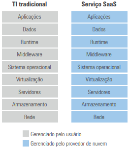
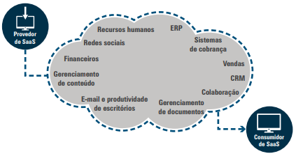

---
---
{% include head-aula.html page-title="Aula 16 - InfraTI" %}
{% include heading-aula.html heading="Computação em Nuvem – SaaS (Software como Serviço)" %}
1. Definição de SaaS
Modelo de computação em nuvem que oferece aplicativos completos gerenciados por provedores, permitindo acesso via
navegador sem instalação local (Chess & Franklin, 2013):
"SaaS elimina a necessidade de aquisição de licenças de software, transferindo responsabilidades de infraestrutura,
atualizações e segurança para o provedor."

1.1 Características Principais
- Acesso universal: Via navegador web em qualquer dispositivo
- Pagamento por uso: Modelo de assinatura ou consumo
- Atualizações automáticas: Mantidas pelo provedor
- Exemplos: Gmail, Dropbox, Netflix, Salesforce CRM
2. Componentes e Serviços SaaS

2.1 Tipos de Aplicações
- Produtividade: Suítes de escritório (Google Workspace, Microsoft 365)
- Comunicação: E-mail corporativo, ferramentas de videoconferência
- Gestão Empresarial:
- ERP (SAP Business ByDesign)
- CRM (Salesforce, HubSpot)
- Gestão de Projetos (Asana, Trello)
- Armazenamento: Dropbox, Google Drive, OneDrive
2.2 Modelo de Marketplace
- Plataformas integradoras: Azure Marketplace, AWS Marketplace
- Vantagens para desenvolvedores:
- Escalabilidade global
- Infraestrutura gerenciada pelo provedor
- Modelo de receita baseado em assinaturas
- Exemplos bem-sucedidos: Uber, Airbnb, Mercado Livre
3. Vantagens e Desvantagens
3.1 Benefícios para Empresas
- Redução de custos: Elimina investimento em hardware e licenças
- Mobilidade: Acesso de qualquer local com internet
- Integração: Compatibilidade com múltiplos sistemas via APIs
- Segurança: Proteção de dados gerenciada por especialistas
3.2 Riscos e Limitações
- Dependência de internet: Requer conexão estável
- Controle limitado: Personalizações restritas
- Conformidade: Desafios em regulamentações específicas (ex: LGPD)
4. Migração para SaaS
4.1 Estratégia Recomendada
- Iniciar com aplicações de baixo risco operacional
- Realizar testes de desempenho e segurança
- Adotar modelo híbrido durante transição
Recomenda-se que veja a aula narrada na aula 16 da unidade 4.
5. Considerações Finais
- Para PMEs: Acesso a tecnologia de ponta com custo reduzido
- Tendências: Crescimento de marketplaces especializados
- Desafios: Gestão de multi-provedores e governança de dados
{% include nav-aula.html next="false" %}
{% include footer.html %}